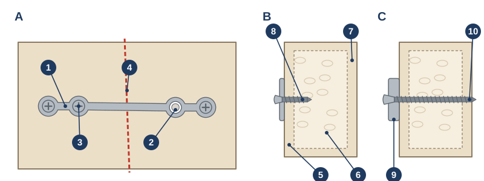
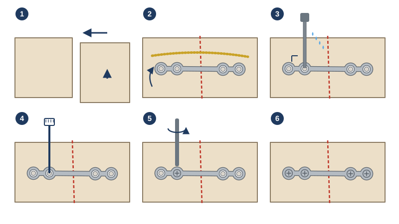
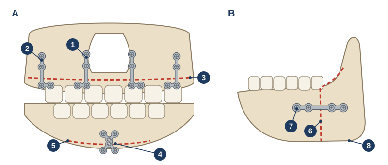

Internal fixation of the mandible: miniplate and reconstruction plate osteosynthesis
Name and classification: Champy M, Loddé JP, Schmitt R, Jaeger JH, Muster D. Mandibular osteosynthesis by miniature screwed plates via a buccal approach. J Maxillofac Surg. 1978;6(1):14-21.
After jaw surgery or an injury, the bone pieces must stay still while they heal. Surgeons often hold them with small titanium plates and screws.12 This page shows, step by step, how a plate and screws go in. It also shows where surgeons put them in the Vivatheca models.
3D viewing only for now. Print files are not available yet.
Not yet clinically reviewed. Educational model only. It shows typical anatomy or disease, not any real patient, and is simplified and may contain errors. Not for diagnosis, treatment planning, surgical guides or use in or on the body. Full disclaimer
Step 1. The bone is cut. Here the cut goes between two back teeth, as in lower jaw surgery. The back piece has slipped out of place. Red shows the cut bone.
Step 2. Line up the pieces. The surgeon puts the pieces back in the right place. The teeth must meet as planned.3
Step 3. Bend the plate to fit. The surgeon picks a plate and bends it to match the bone, often using a soft metal guide first. The plate crosses the cut, with two holes on each side.36
Step 4. Drill the first hole. The drill goes through a plate hole, straight into the bone. Cool water runs over it, so the bone does not get too hot.3
Step 5. Put in the first screw. The surgeon measures how deep the hole is and picks a screw of the right length. Then they turn it in until its head sits in the plate.3
Step 6. Fill the other holes. Each hole is drilled and screwed in the same way. With two screws on each side of the cut, the pieces cannot move.36
Step 7. Look inside. The bone is see-through here. These short screws go into the hard outer layer of bone only. They stay away from the tooth roots and the nerve inside the jaw.12
- Bone
- Teeth
- Cut bone
- Titanium plate
- Screws
- Drill (step 4 only)
The plate and the screws
A small plate (miniplate) is a thin strip of round screw holes joined by narrow bridges. It is about 1 mm thick. The screws are about 2 mm wide.4 Each hole has a sloped rim, so the screw head sits low in the plate.
Surgeons use a bigger plate (reconstruction plate) when the jaw must carry more load. One example is after part of the jaw is removed. It is thicker and stronger. Its screws often go right through the jaw.39


Where surgeons put the plates
Surgeons put plates where the bone is thick and strong, and away from tooth roots and nerves.1 Where they go depends on the operation.

- Upper jaw cut (Le Fort I). Most often four L-shaped plates: two beside the nose and two on the strong ridges above the back teeth. Some surgeons use only two.5 See the jaw surgery models.
- Lower jaw split (BSSO). One straight plate on each side, across the cut, with short screws. Some surgeons use three long screws instead. Both hold the jaw about as well.67
- Chin surgery (genioplasty). One small plate in the middle of the chin, with two screws above the cut and two below. Some surgeons use two screws instead.8
- Jaw rebuilt with leg bone (fibula flap). Small plates join each piece of leg bone to the next and to the jaw. Some surgeons use one long, strong plate instead. Studies differ on which has fewer problems.1011 See the mouth cancer case.
- Top of the jaw removed (rim resection). If the bone left is thin, a long plate along the lower edge keeps it from breaking. See the ameloblastoma case.13
Your surgeon will explain which plates they plan to use for you, and why.
A plate on a real X-ray
This X-ray is of a real person. The authors shared it openly. The picture keeps its own licence, given under it. The model licence does not cover it.

For clinicians: the Vivatheca fixation standard
Every Vivatheca model with plates uses one shared build component (tools/fixation/), so plates look and sit the same way across the collection. Sizes and placements come from the sources below; where a value is our estimate, it says so.
| System | Plate | Screws | Used in |
|---|---|---|---|
| 2.0 mm miniplate | 1.0 mm thick (AO lists 1.0–2.0 mm for Mini Plate 2.0)4; lobes 4.5 mm, bridges 1.9 mm (our estimate) | 2.0 mm, monocortical, 5 mm (shorter where the model bone is thinner)14 | Le Fort I, BSSO, genioplasty, fibula flap (SCC case), this demo |
| 2.0 mm reconstruction-type plate | 1.5 mm thick (our estimate within the 1.0–2.0 mm range)4; continuous bar with lobes, 6.5 mm hole spacing | 2.0 mm, bicortical; length = bone thickness along the screw + 1 mm9 | Rim resection (ameloblastoma case; plate size from the case report)13 |
| 2.4 mm locking reconstruction plate | 2.5 mm thick34 | 2.4 mm locking, bicortical; at least 3–4 screws in each segment39 | Ready for future segmental resections; not yet used |
- Placement: miniplates on Champy's lines of osteosynthesis, monocortical, below the tooth apices and away from the inferior alveolar canal.12 Le Fort I: four L-plates, piriform aperture and zygomaticomaxillary buttress each side (two-plate fixation at the piriform aperture was equally stable in one cohort of 39).5 BSSO: one 4-hole extended miniplate each side across the buccal step6; bicortical screws and miniplates did not differ significantly in stability after setback in a meta-analysis.7 Genioplasty: one central pre-bent 4-hole chin plate, two screws in each segment (stiffer than two bicortical screws in a finite element model).8
- Fibula flap: miniplates at every junction with at least two screws on each side, as on the case radiograph12; miniplate versus reconstruction-bar evidence is mixed (more plate complications with miniplates in a meta-analysis of 1,513 patients; fewer plate exposures with miniplates in a series of 205).1011
- Geometry: the flat outline is extruded, countersunk at each hole, then bent onto a smoothed height map of the bone (the highest bone within 1.5 mm, then Gaussian-smoothed), so the plate bridges steps instead of sinking into them; long plates follow a spline through their holes so they can wrap round the jaw. Screws are dome-headed with a cross recess, threaded, and set along the local plate normal (drilled at a right angle to the plate, as in the instructions for use).3 Lobe and bridge widths, head shape and thread pitch are illustrative.
- Demo model: left mandibular body of the Vivatheca orthognathic base skull (Z-Anatomy), cut between the first and second molars; plate at the height of the BSSO plate. The inferior alveolar canal and the cortical layers are not modelled in 3D; Diagram 1 shows them schematically. Steps follow the order in the instructions for use.3
- Not shown: lag screws, resorbable plates, patient-specific (3D-printed) plates, locking versus non-locking screw heads, and intermaxillary fixation.
Build scripts: tools/fixation/ (component, demo, diagrams) in the Vivatheca repository.
About this model
Not yet clinically reviewed. Educational model only. It shows typical anatomy or disease, not any real patient, and is simplified and may contain errors. Not for diagnosis, treatment planning, surgical guides or use in or on the body. Full disclaimer
3D model: made by Vivatheca from Z-Anatomy (the libre 3D atlas of anatomy, CC BY-SA 4.0), which uses BodyParts3D (The Database Center for Life Science, CC BY-SA 2.1 Japan). Changed: mandible and teeth extracted, smoothed, remeshed, cropped and cut; plate, screws and drill added. This model and the diagrams are licensed under CC BY-SA 4.0.
Sources
- Champy M, Loddé JP, Schmitt R, Jaeger JH, Muster D. Mandibular osteosynthesis by miniature screwed plates via a buccal approach. J Maxillofac Surg. 1978;6(1):14-21. doi.org/10.1016/s0301-0503(78)80062-9 (Monocortical juxta-alveolar and subapical miniplates; ideal lines of osteosynthesis.)
- Worthington P, Champy M. Monocortical miniplate osteosynthesis. Otolaryngol Clin North Am. 1987;20(3):607-620. PubMed 3317206
- DePuy Synthes. MatrixMANDIBLE Preformed Reconstruction Plates: instructions for use. SE_530350 AE, 10/2015. ifu.depuysynthes.com (Manufacturer's instructions: plate 2.5 mm thick; minimum 3–4 screws in each segment; drill at a right angle to the plate with irrigation; step order.)
- AO Foundation Technical Commission. Locking Reconstruction Plate 2.4 and Mini Plate 2.0 System. Approved solution, 2014. aofoundation.org (Mini Plate 2.0: 1.0, 1.25, 1.5 or 2.0 mm thick, 2.0 mm screws; Locking Reconstruction Plate 2.4: 2.5 mm thick. Written for the veterinary version of the system; used here for plate and screw sizes only.)
- Beyler E, Altıparmak N, Bayram B. Comparison of the postoperative stability after repositioning of the maxilla with Le Fort I osteotomy using four- versus two-plate fixation. J Stomatol Oral Maxillofac Surg. 2021;122(2):156-161. doi.org/10.1016/j.jormas.2020.05.011
- Oguz Y, Saglam H, Dolanmaz D, Uckan S. Comparison of stability of 2.0 mm standard and 2.0 mm locking miniplate/screws for the fixation of sagittal split ramus osteotomy on sheep mandibles. Br J Oral Maxillofac Surg. 2011;49(2):135-137. doi.org/10.1016/j.bjoms.2009.11.014 (4-hole extended 2.0 mm miniplates.)
- Al-Moraissi EA, Ellis E. Stability of bicortical screw versus plate fixation after mandibular setback with the bilateral sagittal split osteotomy: a systematic review and meta-analysis. Int J Oral Maxillofac Surg. 2016;45(1):1-7. doi.org/10.1016/j.ijom.2015.09.017
- Gulsever S, Munevveroglu S, Hartomacioglu S, Guldiken IN, Uckan S. Comparison of screw and plate osteosynthesis in advancement genioplasty: a finite element analysis study. Eur Oral Res. 2025;59(1):40-45. doi.org/10.26650/eor.20241371296 (One central 4-hole pre-bent chin plate, two screws in each segment.)
- Schiel S, Otto S, Pautke C, Cornelius CP, Probst FA. Simplified transoral load-bearing osteosynthesis with preformed mandible reconstruction plates. Craniomaxillofac Trauma Reconstr. 2013;6(3):211-214. doi.org/10.1055/s-0033-1343784 (Reconstruction plates fixed with bicortical locking screws.)
- Sobti N, Ahmed KS, Polanco T, et al. Mini-plate versus reconstruction bar fixation for oncologic mandibular reconstruction with free fibula flaps: a systematic review and meta-analysis. J Plast Reconstr Aesthet Surg. 2022;75(8):2691-2701. doi.org/10.1016/j.bjps.2022.04.097
- Chang TY, Lai YS, Lin CY, et al. Plate-related complication and health-related quality of life after mandibular reconstruction by fibula flap with reconstruction plate or miniplate versus anterolateral thigh flap with reconstruction plate. Microsurgery. 2023;43(2):131-141. doi.org/10.1002/micr.30893
- Vergier V, Czarny K, Brau J-J, Le Pelletier F, Taihi I. Proliferative verrucous leukoplakia presenting as a ring around the collar and cancer: a case report. Cureus. 2024;16(3):e56077. doi.org/10.7759/cureus.56077
- Sikri N, Eid S, Mohamed S, Ghosh A. Management of mandibular ameloblastoma: a case report from a Bahrain Government Hospital. Cureus. 2026;18(2):e104441. doi.org/10.7759/cureus.104441
Version 0.1, 6 November 2026.